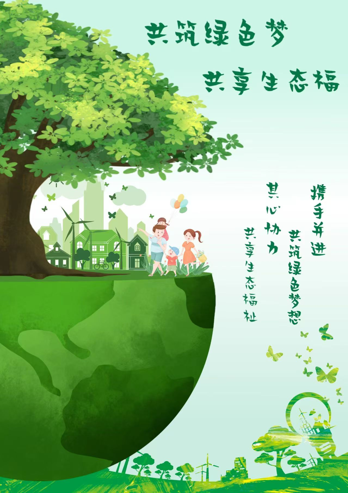

关于我们
简介
团队秉持尊重自然、科学严谨、创新进取、团结协作、科普为民的理念和文化，在遵循经济效益、任人唯贤、因事择人、量才适用、程序化与规范化五大人员配置原则的基础上，设立五个部门，分别是核心管理部门、内容创作与编辑部门、平台运营部门、活动组织部门、合作与资源对接部门。
联系方式
如果您有任何问题或建议，请通过以下方式与我们联系：
- Email:1778773460@qq.com
- 电话:19570239378
主要构成
我们团队由多位生态环保领域的专家组成，致力于推动生态知识的传播与实践。
功能
了解平台基本信息和服务，购买产品，预约线下科普活动，在线咨询企业合作和评价收集。
精神生态
精神生态—— 融于自然，重寻自我。
Spiritual ecology -- Blending into nature and Rediscovering yourself.
自然是最好的治愈师。
Nature is the best healer.
他爬到浪花飞溅的溪涧边上，他沿着平板似的岩石向上走，他把一只手指放到水里，
他转身走向隔在一边的水池，
把两只手放在水里，
把一只脚放在池里，
把几块鹅卵石扔在池里，
他用双手拍打水面，
他高叫，起身站立，
面对急流，面对高山，
举起双手，三次呼喊。
——盖瑞·斯奈德He climbed to the edge of the splashing stream, walking along the flat rock, putting a finger in the water. Turned up and walked to the pool on the side, Put his hands in the water, Put one foot in the pool, Throw a few pebbles. He beat the water with his hands, shouting and standing to his feet. Facing the rapids, facing the mountains, Raised hands and shouted three times. ——Gary Snyder
石黑一雄在《长日留痕》这部作品中，细腻地勾勒出主人公史蒂文斯如何在融入自然的过程中找回自我，重构其心灵的和谐与平衡。该书不仅揭示了精神生态危机的深层源头，也反映了作者对于营造一个和谐共存的生态世界的渴望。
Kazuo Ishiguro, in his book The Remains of the Long Day, describes the process in which Stevens, the hero, finds his true nature and reconstructs the balance of spiritual ecology. The whole work not only conveys the root of the spiritual ecological crisis, but also shows the author's hope for building a harmonious, balanced and co-existing ecological world.
学者们，无论国内外，均意识到生态危机的本质源于人类的精神世界，纷纷倡导重铸人类精神生态的平衡，以期从根本上解决生态难题。自然，这片赋予生命的摇篮，不仅为人类提供了生存所需，更以其无尽的生机启迪着我们的灵魂。自然不只是我们生活的背景或对象，它是我们与众多生命共存的家园，是密切联系着我们的生态之基。自然的深邃与神奇，不仅给予我们物质的支持，更抚慰我们的情感，启迪我们的智慧，治愈我们的创伤，助力我们恢复精神的平衡。因此，我们必须拥抱自然，与之和谐共生，因为自然对于我们至关重要，我们肩负着守护它的重任。
Scholars at home and abroad have recognized that the root of ecological crisis lies in the field of human spirit, so they call for the reconstruction of the balance of human spirit and ecology, and fundamentally solve the current ecological problems. And nature is the best antidote. Nature not only brings us food to eat, but also the smell of life. Nature is not only the external environment or object for human beings, but also the place where human beings and other lives live together, and is an ecological factor closely related to human beings. Nature, with its extensive mystery, inspires human beings and endows them with spirituality. Nature is much more than a companion; it soothes the emotions, enlightens the mind, heals the pain, and helps us restore the balance of our spiritual ecology. Therefore, we need to embrace nature, live in harmony with nature, nature is indispensable to us, we must take responsibility to protect it.
参考书目：《英语文学与生态批评》——宁梅 周杰
Bibliography: English Literature and Ecological Criticism by Ning Mei and Zhou Jie
黄河生态文明
1. 中华文明的起源
千百年来，奔腾不息的黄河同长江一起，哺育着中华民族，孕育了中华文明。黄河流域是我国远古文化的发展中心，公元前4000年至公元前2000年是黄河文明的形成期。在5000多年前，中华文明于多个地点同时并起，而在距今4000年之前，北方地区、江浙地区、海岱地区、江汉地区的几支文化都先后衰落乃至中断，唯独中原地区持续发展，最终建立以部族联盟共主世袭制为特征的早期文明国家，到夏商周三代，才逐步完成了以中原文化、黄河文明为核心的中华文明发展的多元一体格局。黄河文明中心多次迁移，多难兴邦，华夏民族就是在气候变化、河水泛滥、战争冲突中形成和发展起来的。中国社会的发展、国家的产生、文明的形成，都与黄河流域密切相关。因此，在中国历史和人类文明史上，黄河不仅只是一条河流，更是一种伟大文明的象征，是中华民族的母亲河，是中华文明的摇篮。实现黄河文明复兴，就是实现中华民族的伟大复兴。
2. 黄河文化的价值
黄河文化是一种大河文化、农业文化，是产生发展于黄河流域的中华文明。黄河文化的核心价值，可归纳为人文精神与民本主张、社会伦理与仁义道德、正统思想与文化同化、博大包容与求同存异等方面。黄河文化是实现中华民族伟大复兴、坚定现代中国发展道路最为深厚、最为核心、最为可靠的文化根基和历史依据，是中华民族的根本血脉，是中华民族之根。保护、传承、弘扬、发展黄河文化，坚定文化自信，弘扬民族精神，为国家富强、民族振兴凝聚精神力量，实现中华民族的伟大复兴。
3. 黄河环境治理建设
黄河治理保护是事关中华民族伟大复兴的千秋大计，实施黄河战略，建设安全黄河、绿色黄河、和谐黄河、民生黄河，保障黄河长治久安，国泰民安。进入21世纪以来，黄河流域生态问题开始受到越来越广泛的关注，各级政府实施了一系列生态建设和保护措施，流域整体生态环境持续明显向好。上中下游生态保护工作均取得不同程度进展，在黄河流域生态保护和高质量发展座谈会上，习近平总书记总结了上中下游生态保护的成绩，三江源等重大生态保护和修复工程加快实施，上游水源涵养能力稳定提升；中游黄土高原蓄水保土能力显著增强，实现了“人进沙退”的治沙奇迹，库布齐沙漠植被覆盖率达到53%；下游河口湿地面积逐年回升，生物多样性明显增加。在植被覆盖方面，目前黄河流域森林覆盖率为19.36%，低于全国21.63%的森林覆盖率平均水平。在水法规层面，黄河流域各类水事活动基本做到有法可依。总的来说，黄河流域生态保护和高质量发展的机制在逐渐完善。
4. 黄河流域生态保护的急迫性
黄河上中下游具有不同的地理特征和生态环境，黄河上游整体看生态环境较好、水源较充足，但局部地区出现了生态系统退化状况，水源涵养功能下降，甘肃、宁夏等地气候多干旱少雨，存在地域荒漠化问题；黄河中游地区具有丰富的煤炭、能源资源，水土侵蚀、流失严重，工业污染、城镇生活污染和农业面源污染问题突出；黄河下游地区所处黄淮海平原农业发达，但黄河流量偏小，水资源相对匮乏，人多地少，人地关系紧张，河口一些地方出现湿地萎缩。整体来看，黄河中上游部分地区河段已丧失生态功能，流域资源环境承载力已经超出可承载水平，整体生态环境相对脆弱。黄河流域生态环境脆弱的同时，污水处理等基础设施建设缺乏，流域污染治理水平滞后于经济发展，流域内高污染、高能耗产业造成的环保事件时有发生，潜在环境风险高。综上，黄河流域存在水资源短缺、水土流失、生物多样性减少、沙患、水患、盐渍化生态系统功能退化等问题。因此，黄河流域的生态保护极为迫切。
参考书籍:《母亲之河：黄河流域生态保护和高质量发展》－—胡金焱
《黄河流域生态治理法律协调机制综论》——吕志祥
部分来自网络
核心团队架构
核心管理部门
负责整个团队的管理和领导工作，包括制定生态科普活动计划、协调成员间的合作以及监督各项任务的执行。
内容创作与编辑部门
（1）编辑:负责搜集生态科普知识，并整理和编辑生态科普推文，确保内容准确、易懂、有趣，并以图文并茂的方式呈现科学知识。
（2）画师:负责创作生态科普海报和绘本插画，通过吸引人的视觉元素和简洁明了的文字信息，向公众传递关于生态保护、生物多样性、可持续发展等生态理念。
（3）活动策划师: 根据不同群体的需求策划不同的生态科普活动，确保活动的针对性、体验性和互动性。
平台运营部门
负责运营和管理平台，及时解决问题，收集和分析公众对生态环境科普的反馈与建议，优化科普模式，确保信息的准确、有效。
活动组织部门
负责组织社区生态科普活动，确保活动顺利开展。
合作与资源对接部门
负责跨域的合作与资源的对接，与其他企业建立合作关系，支持生态科普的运营和发展。
服务
产品购买
您可以通过我们的平台购买各类环保产品，支持生态环保事业。
预约线下科普活动
欢迎预约参加我们的线下科普活动，了解更多生态环保知识。
在线咨询
如有疑问，请随时通过在线咨询与我们联系。
企业合作
我们欢迎与各类企业的合作，共同推动生态环保工作的发展。